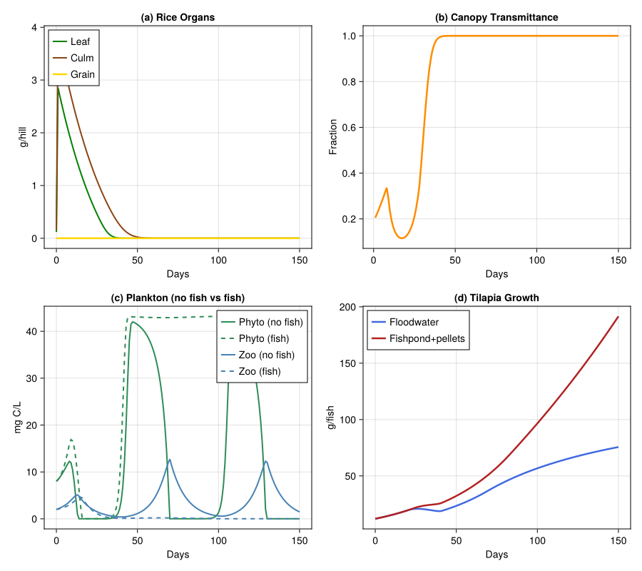

Rice–Fish Integrated Agroecosystem
PhysiologicallyBasedDemographicModels.jl
- Introduction
- Rice Growth Model
- Aquatic Food Web
- Tilapia Growth
- System Coupling
- Weather: Bang Sai, Thailand
- Simulation Engine
- Scenario 1: Rice Only
- Scenario 2: Rice + Tilapia in Floodwater
- Scenario 3: Rice + Fishpond (Pellet-Fed)
- Visualization
- Discussion
- Parameter Sources
Primary reference: (<span class="nocase">d’Oultremont and Gutierrez</span> 2002).
Introduction
Rice–fish culture is practised across Southeast Asia, where Nile tilapia (Oreochromis niloticus) are stocked into flooded paddies at transplanting. d’Oultremont and Gutierrez (2002, Parts I & II, Ecological Modelling) modelled the rice–aquatic ecosystem at Bang Sai, Thailand, coupling 14 meta-species across four trophic levels. Their key finding: rice canopy shading limits floodwater phytoplankton, cascading through zooplankton to constrain fish growth. This vignette implements a simplified four-component version: rice plant, phytoplankton, zooplankton, and tilapia.
Rice Growth Model
The rice plant follows the carbon-balance approach of Graf et al. (1990). Four organ populations per hill (25 hills/m²) are modelled as distributed delays with temperature-driven development above a base of 10 °C. Tillering peaks at ~21 tillers/hill around 500 DD, declining to ~9 at maturity (~2000 DD).
using PhysiologicallyBasedDemographicModels
using CairoMakie
const RICE_T_BASE = 10.0; const RICE_T_UPPER = 42.0
rice_dev = LinearDevelopmentRate(RICE_T_BASE, RICE_T_UPPER)
const DD_MAX_TILLER = 500.0; const DD_PANICLE_INIT = 1000.0
const DD_GRAIN_FILL = 1200.0; const DD_HARVEST = 2000.0
const SLA_RICE = 0.037; const EXT_K = 0.6; const RAD_CONV = 0.26
const HILLS = 25; const GROWTH_RESP = 0.28
k = 25
resp_culm = Q10Respiration(0.010, 2.0, 25.0)
resp_leaf = Q10Respiration(0.015, 2.0, 25.0)
resp_root = Q10Respiration(0.008, 2.0, 25.0)
resp_grain = Q10Respiration(0.005, 2.0, 25.0)
function tiller_count(dd)
dd < 150 && return 3.0
dd < DD_MAX_TILLER && return 3.0 + 18.0 * (dd - 150) / (DD_MAX_TILLER - 150)
return 21.0 - 12.0 * min(1.0, (dd - DD_MAX_TILLER) / (DD_HARVEST - DD_MAX_TILLER))
end
function rice_photo(lm, rad, til)
lai = min(10.0, lm * SLA_RICE * HILLS * til / 3.0)
(1.0 - exp(-EXT_K * lai)) * rad * RAD_CONV / HILLS
end
function canopy_transmittance(lm, til)
exp(-EXT_K * min(10.0, lm * SLA_RICE * HILLS * til / 3.0))
end
function rice_priorities(dd)
dd < DD_PANICLE_INIT ? [:root, :leaf, :culm] :
dd < DD_GRAIN_FILL ? [:leaf, :culm, :root, :grain] :
[:grain, :culm, :leaf, :root]
endrice_priorities (generic function with 1 method)Aquatic Food Web
Phytoplankton (aggregated Scenedesmus/Chlorella) grow at up to 1.5/day at 30 °C, limited by canopy-transmitted light (Monod half-saturation). Zooplankton (rotifers + cladocerans) graze phytoplankton via a Holling Type II response, peaking at 0.9/day at 28 °C.
const PHYTO_RMAX = 1.5; const PHYTO_TOPT = 30.0; const PHYTO_LOSS = 0.15
const PHYTO_K_LIGHT = 0.3; const PHYTO_CAP = 50.0
const ZOO_RMAX = 0.9; const ZOO_TOPT = 28.0; const ZOO_LOSS = 0.10
const ZOO_HALF = 5.0; const ZOO_GMAX = 2.0; const ZOO_EFF = 0.30
phyto_r(T, lf) = T < 5 ? 0.0 : PHYTO_RMAX * max(0, 1-((T-PHYTO_TOPT)/15)^2) * lf/(PHYTO_K_LIGHT+lf)
zoo_r(T, P) = T < 8 ? 0.0 : ZOO_RMAX * max(0, 1-((T-ZOO_TOPT)/12)^2) * P/(ZOO_HALF+P)zoo_r (generic function with 1 method)Tilapia Growth
Tilapia are stocked at 2 fish/m², 12 g each. Temperature-dependent growth (optimum 28 °C, base 16 °C) is limited by zooplankton + phytoplankton supply via a demand-driven functional response. Maintenance respiration follows Q₁₀ = 2.2.
const TIL_TBASE = 16.0; const TIL_TOPT = 28.0; const TIL_TMAX = 36.0
const TIL_W0 = 12.0; const TIL_DENS = 2.0; const TIL_GMAX = 0.04
tilapia_resp = Q10Respiration(0.012, 2.2, 25.0)
function til_tscalar(T)
(T < TIL_TBASE || T > TIL_TMAX) && return 0.0
T <= TIL_TOPT ? min(1.0, (T-TIL_TBASE)/(TIL_TOPT-TIL_TBASE)) :
max(0.0, 1-(T-TIL_TOPT)/(TIL_TMAX-TIL_TOPT))
endtil_tscalar (generic function with 1 method)System Coupling
Rice canopy shading limits floodwater light → suppresses phytoplankton → limits fish. Fish feces recycle ~10 % of nutrients to rice (fishpond scenario). Area: 90 % rice, 10 % pond; fish spend 80 % of time in paddy.
const A_RICE = 0.90; const FISH_T_RICE = 0.80
const NUTRIENT_BOOST = 0.10; const PELLET_RATE = 0.030.03Weather: Bang Sai, Thailand
const NDAYS = 150
wdays = [let T_m = 28.0-1.5d/NDAYS, r = max(12.0, 20+3sin(2π*d/45)-2d/NDAYS)
DailyWeather(T_m, T_m-5+sin(2π*d/30), T_m+5+1.5sin(2π*d/30);
radiation=r, photoperiod=12.5) end for d in 1:NDAYS]
weather = WeatherSeries(wdays; day_offset=1)WeatherSeries{Float64}(DailyWeather{Float64}[DailyWeather{Float64}(27.99, 23.197911690817758, 33.30186753622663, 20.404185969546866, 12.5, 0.0, 0.5), DailyWeather{Float64}(27.98, 23.3867366430758, 33.5901049646137, 20.80024540078433, 12.5, 0.0, 0.5), DailyWeather{Float64}(27.97, 23.557785252292472, 33.85167787843871, 21.180209929227402, 12.5, 0.0, 0.5), DailyWeather{Float64}(27.96, 23.703144825477395, 34.074717238216095, 21.53642445936628, 12.5, 0.0, 0.5), DailyWeather{Float64}(27.95, 23.816025403784437, 34.24903810567666, 21.861696162392953, 12.5, 0.0, 0.5), DailyWeather{Float64}(27.94, 23.891056516295155, 34.36658477444273, 22.149434476432184, 12.5, 0.0, 0.5), DailyWeather{Float64}(27.93, 23.924521895368272, 34.42178284305241, 22.393779384331793, 12.5, 0.0, 0.5), DailyWeather{Float64}(27.92, 23.914521895368274, 34.411782843052414, 22.589715472230836, 12.5, 0.0, 0.5), DailyWeather{Float64}(27.91, 23.861056516295154, 34.33658477444273, 22.73316954888546, 12.5, 0.0, 0.5), DailyWeather{Float64}(27.9, 23.766025403784436, 34.19903810567666, 22.82108992570329, 12.5, 0.0, 0.5) … DailyWeather{Float64}(26.59, 20.638943483704846, 30.16341522555727, 20.349434476432176, 12.5, 0.0, 0.5), DailyWeather{Float64}(26.58, 20.585478104631726, 30.08821715694759, 20.59377938433179, 12.5, 0.0, 0.5), DailyWeather{Float64}(26.57, 20.575478104631728, 30.07821715694759, 20.789715472230835, 12.5, 0.0, 0.5), DailyWeather{Float64}(26.56, 20.608943483704845, 30.13341522555727, 20.93316954888546, 12.5, 0.0, 0.5), DailyWeather{Float64}(26.55, 20.68397459621556, 30.25096189432334, 21.02108992570329, 12.5, 0.0, 0.5), DailyWeather{Float64}(26.54, 20.796855174522605, 30.425282761783905, 21.051505814390623, 12.5, 0.0, 0.5), DailyWeather{Float64}(26.53, 20.942214747707528, 30.64832212156129, 21.023565686104817, 12.5, 0.0, 0.5), DailyWeather{Float64}(26.52, 21.1132633569242, 30.9098950353863, 20.93755384549466, 12.5, 0.0, 0.5), DailyWeather{Float64}(26.51, 21.30208830918224, 31.19813246377336, 20.794884897033697, 12.5, 0.0, 0.5), DailyWeather{Float64}(26.5, 21.5, 31.499999999999996, 20.598076211353316, 12.5, 0.0, 0.5)], 1)Simulation Engine
function sim_rf(weather, nd; fish=true, pond=false, pellet=false)
# Rice distributed delays (mutable, passed via params for in-place stepping)
rice_delays = (
culm = DistributedDelay(k, 800.0; W0=0.16),
leaf = DistributedDelay(k, 600.0; W0=0.12),
root = DistributedDelay(k, 1000.0; W0=0.06),
grain = DistributedDelay(k, 700.0; W0=0.0),
)
rice_μ = (culm=0.001, leaf=0.001, root=0.0005, grain=0.0005)
# All components as BulkPopulations
culm_bp = BulkPopulation(:culm, 0.16)
leaf_bp = BulkPopulation(:leaf, 0.12)
root_bp = BulkPopulation(:root, 0.06)
grain_bp = BulkPopulation(:grain, 0.0)
phyto_bp = BulkPopulation(:phyto, 8.0)
zoo_bp = BulkPopulation(:zoo, 2.0)
fish_bp = BulkPopulation(:fish, fish ? TIL_W0 : 0.0)
cum_dd_state = ScalarState(:cum_dd, 0.0;
update=(val, sys, w, day, p) -> val + degree_days(rice_dev, w.T_mean))
dynamics = CustomRule(:dynamics, (sys, w, day, p) -> begin
T = w.T_mean
dd = degree_days(rice_dev, T)
cumd = get_state(sys, :cum_dd)
tl = tiller_count(cumd)
# Rice carbon balance
s = rice_photo(delay_total(p.delays.leaf), w.radiation, tl)
maint = sum(respiration_rate(r, T) * delay_total(getfield(p.delays, f))
for (f, r) in zip((:culm,:leaf,:root,:grain),
(resp_culm,resp_leaf,resp_root,resp_grain)))
ns = max(0.0, s - maint) * (1 - GROWTH_RESP)
p.pond && p.pellet && (ns *= 1 + NUTRIENT_BOOST)
pris = rice_priorities(cumd)
rem = ns
inf = Dict(:culm=>0.0, :leaf=>0.0, :root=>0.0, :grain=>0.0)
for pr in pris
a = min(rem, max(0.0, delay_total(getfield(p.delays, pr)) * 0.04 * dd))
inf[pr] = a
rem -= a
end
for nm in (:culm, :leaf, :root, :grain)
step_delay!(getfield(p.delays, nm), dd, inf[nm]; μ=getfield(p.rice_μ, nm))
end
sys[:culm].population.value[] = delay_total(p.delays.culm)
sys[:leaf].population.value[] = delay_total(p.delays.leaf)
sys[:root].population.value[] = delay_total(p.delays.root)
sys[:grain].population.value[] = delay_total(p.delays.grain)
τ = canopy_transmittance(delay_total(p.delays.leaf), tl)
# Aquatic dynamics
Pv = total_population(sys[:phyto].population)
Zv = total_population(sys[:zoo].population)
gr = ZOO_GMAX * Zv * Pv / (ZOO_HALF + Pv)
dP = Pv * (phyto_r(T, τ) * (1 - Pv/PHYTO_CAP) - PHYTO_LOSS) - gr
fp = 0.0
if p.fish
ft = p.pond ? FISH_T_RICE : 1.0
fw_val = total_population(sys[:fish].population)
fp = 0.5 * til_tscalar(T) * ft * TIL_DENS * (fw_val/100) * Zv / (2 + Zv)
end
dZ = Zv * (zoo_r(T, Pv) * ZOO_EFF - ZOO_LOSS) - fp
sys[:phyto].population.value[] = max(0.01, Pv + dP)
sys[:zoo].population.value[] = max(0.01, Zv + dZ)
# Fish growth
if p.fish
W = total_population(sys[:fish].population)
ts = til_tscalar(T)
food = Zv * 0.5 + Pv * 0.05
p.pond && p.pellet && (food += PELLET_RATE * W)
g = min(TIL_GMAX * W * ts, food * TIL_DENS * 0.3)
sys[:fish].population.value[] = max(W * 0.95, W + g - respiration_rate(tilapia_resp, T) * W)
end
return (transmit=τ, tiller=tl)
end)
system = PopulationSystem(
:culm => culm_bp, :leaf => leaf_bp, :root => root_bp, :grain => grain_bp,
:phyto => phyto_bp, :zoo => zoo_bp, :fish => fish_bp;
state=[cum_dd_state])
prob = PBDMProblem(MultiSpeciesPBDMNew(), system, weather, (1, nd);
p=(delays=rice_delays, rice_μ=rice_μ, fish=fish, pond=pond, pellet=pellet),
rules=AbstractInteractionRule[dynamics])
sol = solve(prob, DirectIteration())
# Build output arrays (nd+1 length, with initial values prepended)
log = sol.rule_log[:dynamics]
cm = vcat(0.16, sol[:culm])
lm = vcat(0.12, sol[:leaf])
rm_ = vcat(0.06, sol[:root])
gm = vcat(0.0, sol[:grain])
P = vcat(8.0, sol[:phyto])
Z = vcat(2.0, sol[:zoo])
fw = vcat(fish ? TIL_W0 : 0.0, sol[:fish])
til = vcat(3.0, [r.tiller for r in log])
tr = [r.transmit for r in log]
cdd = collect(sol.state_history[:cum_dd])
(; culm=cm, leaf=lm, root=rm_, grain=gm, tiller=til,
phyto=P, zoo=Z, fish=fw, transmit=tr, cum_dd=cdd)
endsim_rf (generic function with 1 method)Scenario 1: Rice Only
r1 = sim_rf(weather, NDAYS; fish=false)
println("── Rice Only ──")
println("Grain: $(round(r1.grain[end],digits=2)) g/hill " *
"($(round(r1.grain[end]*HILLS/1000,digits=2)) t/ha equiv.)")
println("Peak phyto: $(round(maximum(r1.phyto),digits=1)) mg C/L")── Rice Only ──
Grain: 0.0 g/hill (0.0 t/ha equiv.)
Peak phyto: 42.0 mg C/LScenario 2: Rice + Tilapia in Floodwater
r2 = sim_rf(weather, NDAYS; fish=true, pond=false)
println("── Rice + Tilapia (floodwater) ──")
println("Grain: $(round(r2.grain[end],digits=2)) g/hill")
println("Fish: $(TIL_W0) → $(round(r2.fish[end],digits=1)) g")── Rice + Tilapia (floodwater) ──
Grain: 0.0 g/hill
Fish: 12.0 → 75.6 gScenario 3: Rice + Fishpond (Pellet-Fed)
r3 = sim_rf(weather, NDAYS; fish=true, pond=true, pellet=true)
println("── Rice + Fishpond ──")
println("Grain: $(round(r3.grain[end],digits=2)) g/hill " *
"(+$(round((r3.grain[end]/max(r1.grain[end],1e-10)-1)*100,digits=1))%)")
println("Fish: $(TIL_W0) → $(round(r3.fish[end],digits=1)) g")── Rice + Fishpond ──
Grain: 0.0 g/hill (+-100.0%)
Fish: 12.0 → 191.5 gVisualization
days = 0:NDAYS
fig = Figure(size=(900, 800))
ax1 = Axis(fig[1,1], xlabel="Days", ylabel="g/hill", title="(a) Rice Organs")
lines!(ax1, collect(days), r1.leaf, label="Leaf", color=:green, linewidth=2)
lines!(ax1, collect(days), r1.culm, label="Culm", color=:saddlebrown, linewidth=2)
lines!(ax1, collect(days), r1.grain, label="Grain", color=:gold, linewidth=2.5)
axislegend(ax1; position=:lt)
ax2 = Axis(fig[1,2], xlabel="Days", ylabel="Fraction", title="(b) Canopy Transmittance")
lines!(ax2, collect(1:NDAYS), r1.transmit, color=:darkorange, linewidth=2.5)
ax3 = Axis(fig[2,1], xlabel="Days", ylabel="mg C/L", title="(c) Plankton (no fish vs fish)")
lines!(ax3, collect(days), r1.phyto, label="Phyto (no fish)", color=:seagreen, linewidth=2)
lines!(ax3, collect(days), r2.phyto, label="Phyto (fish)", color=:seagreen, linewidth=2, linestyle=:dash)
lines!(ax3, collect(days), r1.zoo, label="Zoo (no fish)", color=:steelblue, linewidth=2)
lines!(ax3, collect(days), r2.zoo, label="Zoo (fish)", color=:steelblue, linewidth=2, linestyle=:dash)
axislegend(ax3; position=:rt)
ax4 = Axis(fig[2,2], xlabel="Days", ylabel="g/fish", title="(d) Tilapia Growth")
lines!(ax4, collect(days), r2.fish, label="Floodwater", color=:royalblue, linewidth=2.5)
lines!(ax4, collect(days), r3.fish, label="Fishpond+pellets", color=:firebrick, linewidth=2.5)
axislegend(ax4; position=:lt)
fig
Discussion
The model reproduces the central insight of d’Oultremont & Gutierrez (2002): rice canopy closure is the master variable governing aquatic productivity. Light-mediated trophic cascading limits fish growth in floodwater-only systems, while fishpond + pellet-feeding decouples fish from this constraint and recycles nutrients back to rice (~10 % yield gain). The simplification from 14 to 4 species captures qualitative patterns but underestimates nutrient pathway complexity.
Parameter Sources
| Parameter | Value | Source |
|---|---|---|
| Rice Tbase / Tupper | 10 / 42 °C | Yoshida (1981); Graf et al. (1990) |
| SLA, extinction coeff. | 0.037 m²/g, 0.6 | Murata & Togari (1975); Hayashi & Ito (1962) |
| Phyto max growth | 1.5 /day at 30 °C | Eppley (1972); d’Oultremont & Gutierrez (2002) |
| Zoo max growth | 0.9 /day at 28 °C | Allan (1976) |
| Tilapia Tbase / Topt | 16 / 28 °C | Caulton (1982); d’Oultremont & Gutierrez (2002) |
| Stocking: 2 fish/m², 12 g | — | d’Oultremont & Gutierrez (2002) |
| Area rice:pond, fish time | 90:10, 80 % | d’Oultremont & Gutierrez (2002) |
| Nutrient yield boost | 10 % | d’Oultremont & Gutierrez (2002, Part II) |
| Growth resp. fraction | 0.28 | Penning de Vries & van Laar (1982) |
| Tilapia max growth rate | 0.04 /day | [assumed] — calibrated to 100–270 g range |
| Pellet feed rate | 0.03 g/g/day | [assumed] |
<div id="refs" class="references csl-bib-body hanging-indent">
<div id="ref-DOultremont2002RiceFish" class="csl-entry">
<span class="nocase">d’Oultremont, Thibaud, and Andrew Paul Gutierrez</span>. 2002. “A Multitrophic Model of a Rice–Fish Agroecosystem: II. Linking the Flooded Rice–Fishpond Systems.” Ecological Modelling 155: 159–76. https://doi.org/10.1016/S0304-3800(02)00130-8.
</div>
</div>